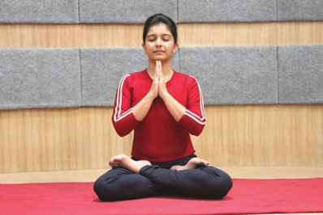

Yogic Practices for Healthy Pregnancy
1.PRAYER
Yogic Practice shall start with a prayer or prayerful mood to enhance the benefits of practice.
OM SAHANA VAVATU SAHANA BHUNATTU
SAHA VIRYAM
KARAWAVAHAI
TEJASVINAVADITAMASTU
MA
VIDVISHAVAHAI
OM SHANTI SHANTI OM
Meaning
Together may we be protected
Together may we be
nourished
Together may we work with great energy
May our journey together be brilliant and effective
May
there be no bad feelings between us
Peace, peace, peace

2.YOGIC SUKSHMA VYAYAMA(Micro Circulation Practices):
Yogic Sūksma Vyāyāmas help to increase micro circulation. These practices can be done while standing and sitting.I . NECK BENDING
Sthiti: Samasthiti(Alert Posture)
II . SHOULDER’S MOVEMENT
Sthiti: Samasthiti(Alert Posture)
3.YOGĀSANAS:
I. STANDING POSTURES
TĀDĀSANA (Palm Tree Posture)Tāda means palm tree or mountain. This asana teaches one to attain stability and firmness and forms the base for all the standing asana.
VRKSĀSANA (The Tree Posture)
Vrksa means tree. The final position of this āsana resembles the shape of a tree, hence the name.
TRIKONĀSANA (The Triangle Posture)
Trikona means triangle. Tri means three and kona is an angle. As the āsana resembles three arms triangles made by the trunk and the limbs, it has been named Trikonāsana.
KATICAKRASANA (Lumbar-Twist Posture)
‘Kati’ means waist and ‘cakra’ means wheel. In this asana, one has to twist the waist to right and left side. While doing so, the waist moves like a wheel, therefore it is named as Katicakrasana.
VIRABHADRASANA (The Warrior Pose):
The Virabhadrasana is derived from the Sanskrit vira, meaning “hero,” bhadra, meaning “ auspicious,” and asana, meaning “pose” and this asana is commonly called “warrior pose.”
PRASARITA PADOTTANASANA (Wide-Legged Forward Bend Yoga Pose):
Prasarita means spread, stretched out or outstretched limbs, Pada means “foot” and Uttana means intense or stretched out.
II. SITTNG POSTURES
DANDASANAThe word “Danda” comes from the Sanskrit word which means stick or rod and the meaning of Asana is Posture.

SUKHASANA
The word “Sukha” comes from the Sanskrit word which means happiness and the meaning of Asana is Posture.
BADHAKONASANA
Badhakonasana comes from the Sanskrit baddha, meaning “bound,” kona, meaning “angle” and asana, meaning “pose” or “posture.”
SASANKASANA (Hare Posture)
Sasanka means ‘’hare’. The body in this posture takes the shape of a hare, hence the name.
MARJARIASANA
‘Marjari‘ means ‘Cat’ and ‘asana’ means ‘pose’ so it is called Marjariasana (cat pose).
MALASANA
Malasana also known as the Squat or Garland Pose.
PARIVRATA SUKHASANA
Parivrtta Sukhasana is derived from the Sanskrit words Parivrtta (revolve), Sukha (easy or comfortable or joy), and asana (posture or pose). It is called as Simple Cross-Legged Twist.

III. SUPINE POSTURES
VIPARITAKARANI (Legs Up the Wall Pose)In Sanskrit the term, ‘Viparita’ means inverted and ‘Karani’ refers to action. In this posture the body will remain in an inverted position.
ŚAVĀSANA (The Dead Body Posture)
Sava means dead body. The final position in this āsana resembles a dead body.
Sthiti: Supine Relaxation Posture
IV. PRONE POSTURES
BALASANABala means child. The final position in this āsana resembles side lying child.
Sthiti: Side Lying Relaxation Posture
4. PRĀNĀYĀMA
NADĪŚODHANA or ANULOMA VILOMA PRĀNĀYĀMA (Alternate Nostril Breathing)
The main characteristic feature of this prānāyāma is alternate breathing through the left and right nostrils without or with retention of breath (kumbhaka).
Sthiti:Any meditative posture.
Ratio and timing
1. For beginners, the duration of inhalation and exhalation should be equal.
2. Gradually make 1:2; inhalation: exhalation
Breathing
1. Breath should be slow, steady and controlled. It should not be forced or restricted in anyway.
BHRĀMARĪ PRĀNĀYĀMA (BHRĀMARĪ RECAKA)
Bhrāmarī is derived from bhramara which means black bee. During the practice of this prānāyāma, the sound produced resembles the buzzing of a black bee.
Sthiti: Any meditative posture.

ŚĪTALĪ PRĀNĀYĀMA
Śītalī means cooling. It also means calm and passionless. As the name indicates this prānāyāma cools the mind-body system. It is specially designed to reduce the body temperature. Practice of this prānāyāma brings harmony in the physical body and calms the mind.

5. DHYĀNA
Dhyāna or meditation is an act of continuous contemplation.
Sthiti: Any meditative posture.
SHANTI PATHA
Om, Sarve Bhavantu Sukhinah,
Sarve Santu Nirāmayāh
Sarve Bhadrāni Paśyantu,
Mā kascit Duhkha Bhāgabhavet
Om, Sāntih Sāntih Sāntih
May all be happy.
May all be free from disease.
May all see only things auspicious.
May none suffer from misery.